Q1Which markets deserve investment?
Question
Which countries should Northwind Invest in, Maintain, or Review, based on market size and revenue growth?
Why it matters
Sales force, marketing and inventory are limited. A country that is both large and growing faster than the company is where an extra dollar is most likely to pay back; a shrinking market may need a different approach or less attention.
Analytical approach
Markets are defined by shipping country (21 countries). Growth compares the same nine calendar months a year apart (Jul 1996–Mar 1997 vs Jul 1997–Mar 1998), so seasonality cancels out. Whole-company revenue grew +83% over the same windows, so a country is “outgrowing” only if it beats that. Countries with fewer than 5 orders in a window are drawn hollow and flagged as small samples.
Visualization
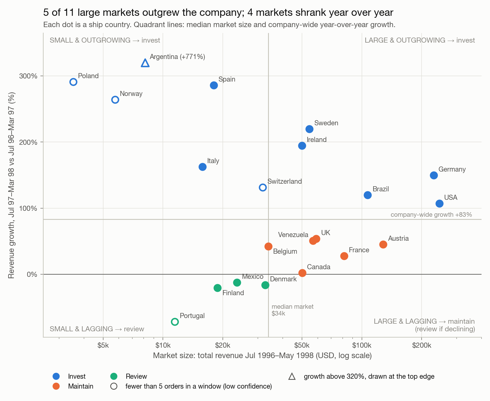
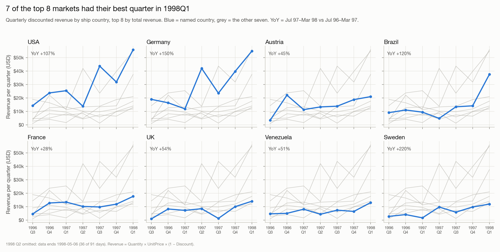
Full classification table
| Country | Action | Share of revenue | Growth (9-mo YoY) | Orders (latest 9 mo) | Active customers | Confidence flag |
|---|---|---|---|---|---|---|
| USA | Invest | 19.4% | +107% | 63 | 13 | |
| Germany | Invest | 18.2% | +150% | 55 | 11 | |
| Austria | Maintain | 10.1% | +45% | 18 | 2 | Few customers |
| Brazil | Invest | 8.5% | +120% | 49 | 9 | |
| France | Maintain | 6.4% | +28% | 40 | 10 | |
| UK | Maintain | 4.7% | +54% | 24 | 7 | |
| Venezuela | Maintain | 4.5% | +51% | 22 | 4 | |
| Sweden | Invest | 4.3% | +220% | 20 | 2 | Few customers |
| Canada | Maintain | 4.0% | +2% | 13 | 3 | |
| Ireland | Invest | 4.0% | +195% | 9 | 1 | Few customers |
| Belgium | Maintain | 2.7% | +42% | 10 | 2 | Few customers |
| Denmark | Review | 2.6% | -16% | 10 | 2 | Few customers |
| Switzerland | Invest | 2.5% | +132% | 8 | 2 | Small sample |
| Mexico | Review | 1.9% | -12% | 9 | 3 | |
| Finland | Review | 1.5% | -20% | 9 | 2 | Few customers |
| Spain | Invest | 1.4% | +286% | 11 | 4 | |
| Italy | Invest | 1.2% | +163% | 15 | 3 | |
| Portugal | Review | 0.9% | -72% | 3 | 1 | Small sample |
| Argentina | Invest | 0.6% | +771% | 10 | 3 | Small sample |
| Norway | Invest | 0.4% | +264% | 3 | 1 | Small sample |
| Poland | Invest | 0.3% | +291% | 4 | 1 | Small sample |
Main finding
- Invest (large & outgrowing): USA (+107%), Germany (+150%), Brazil (+120%) are big and clearly beat the company's +83%.
- Maintain (large, slower growth): Austria, France, UK, Venezuela, Canada, Belgium.
- Review (shrinking): Denmark, Mexico, Finland, Portugal.
- Several small markets look like “Invest” on paper (e.g. Argentina +771%, 2 orders growing to 10) but rest on a handful of orders and are flagged low-confidence.
Business interpretation
Concentrate growth spending on USA, Germany and Brazil, which together are about 46% of revenue and growing fastest. Keep serving the Maintain group efficiently. Review the four shrinking markets before committing resources. Treat the small-market “Invest” labels (and Sweden / Ireland, which depend on 1–2 customers) as pilots, not commitments. Using the customer's own country instead of the ship-to country changes no classification; shorter 6-month or Q1-only windows change 3–4 borderline countries (Canada, Belgium, USA, Switzerland, Italy), as noted in the caveats.
Q2Regional mix, shipping consolidation and under-served customers
Question
(a) Do regions differ in which product categories they buy, so we could suggest each region's best-sellers? (b) Can orders to the same destination be consolidated to save shipments? (c) Which customers buy too rarely and what could we offer them?
Why it matters
Region-specific recommendations only help if regional tastes truly differ. Consolidation cuts shipping effort, and dormant customers are the cheapest revenue to win back.
Analytical approach
Countries were grouped into seven regions (North America, Latin America, British Isles, Western Europe, Central Europe, Nordics, Southern Europe).
- (a) Compare each region's revenue share by category, then test whether the differences exceed chance with a permutation test that shuffles regions across whole customers and a chi-square on order-line counts.
- (b) Count orders to the same city within a ±7-day window and greedily batch them; check that every batched order would still meet its RequiredDate.
- (c) Flag customers with zero orders or at most 5 orders (bottom quartile), by region.
Visualization
(a) Category mix by region
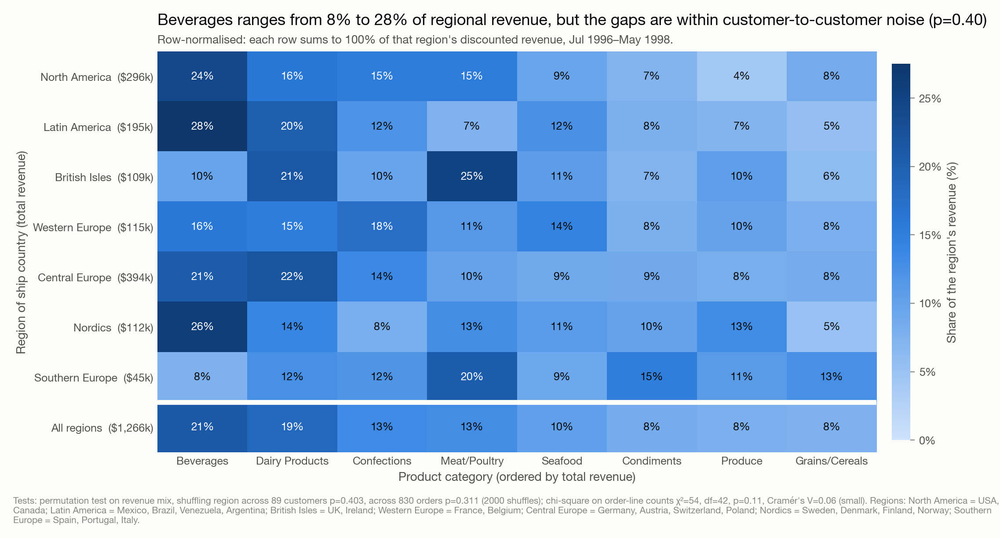
The heatmap looks varied (Beverages ranges 8%–28%), so we tested it. Shuffling regions across whole customers gives p = 0.40; the line-count chi-square gives p = 0.11 (Cramér's V = 0.064, small). One customer makes up 46% of British Isles revenue.
(b) Consolidation
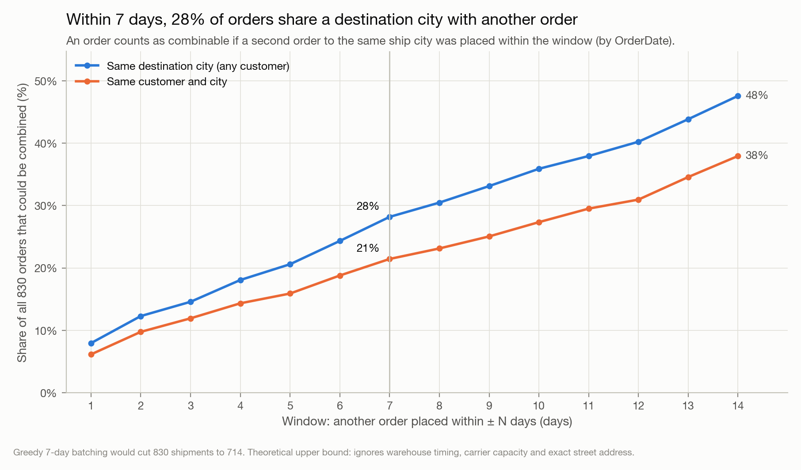
28% of orders have another order to the same city within ±7 days (21% for the same customer). Batching would cut 830 shipments to 714 (14% fewer); in 93 of 102 multi-order batches every order would still meet its deadline.
(c) Under-served customers
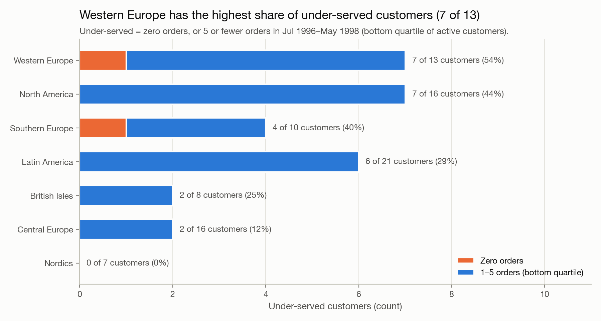
28 of 91 customers are under-served: the 2 with no orders (FISSA, PARIS) plus everyone with 5 or fewer orders. Western Europe has the highest share (7 of 13).
Main finding
- (a) Regional category differences are statistically indistinguishable from chance, so “recommend each region's best-sellers” has weak evidence behind it.
- (b) Up to ~14% fewer shipments is possible, highest in Latin America (21%) and British Isles (20%), lowest in Southern Europe (5%).
- (c) Rarely-buying customers are concentrated in Western Europe and North America (7 each).
Business interpretation
Do not build region-specific product campaigns on this data; use company-wide best-sellers instead. Pilot a weekly consolidation window where the same city is served often (London, Boise, Rio de Janeiro, São Paulo). The 14% is an upper bound: it ignores warehouse timing and exact street addresses. For under-served customers, “buys rarely” does not prove unmet demand (counts are not adjusted for when a customer started), so start with outreach to the two zero-order customers and the larger dormant accounts (e.g. FOLIG, 5 orders, $11.7k).
Q3What drives late shipments?
Question
Which orders ship late or near their deadline, and which factors (shipper, country, employee, season, lead time, order size) explain it?
Why it matters
Late delivery damages customer trust. Knowing the real driver avoids blaming the wrong shipper or region.
Analytical approach
An order is late if shipped after its RequiredDate and near-deadline if it shipped with 0–2 days to spare. The 21 unshipped orders are excluded (809 analysed). Eight factors were tested with a Bonferroni-corrected threshold (p < 0.0063).
Visualization
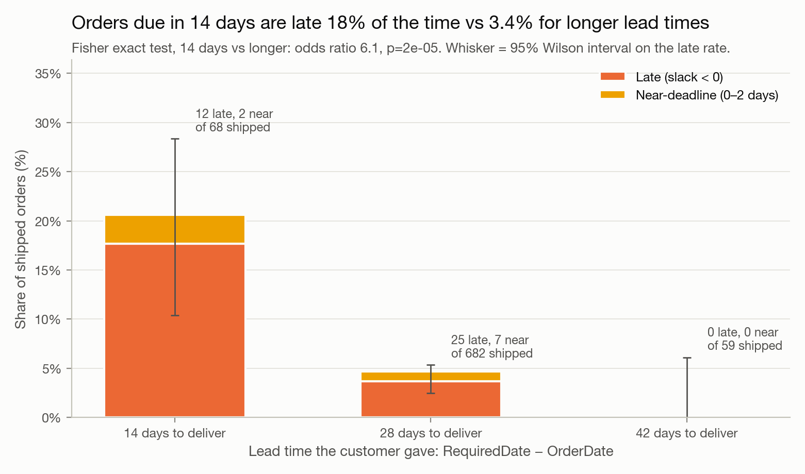
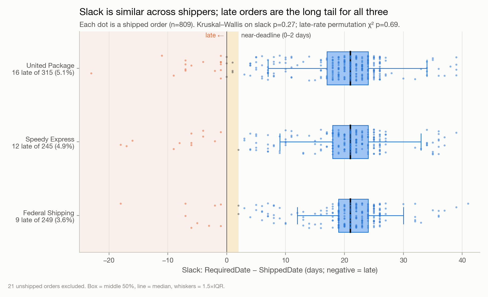
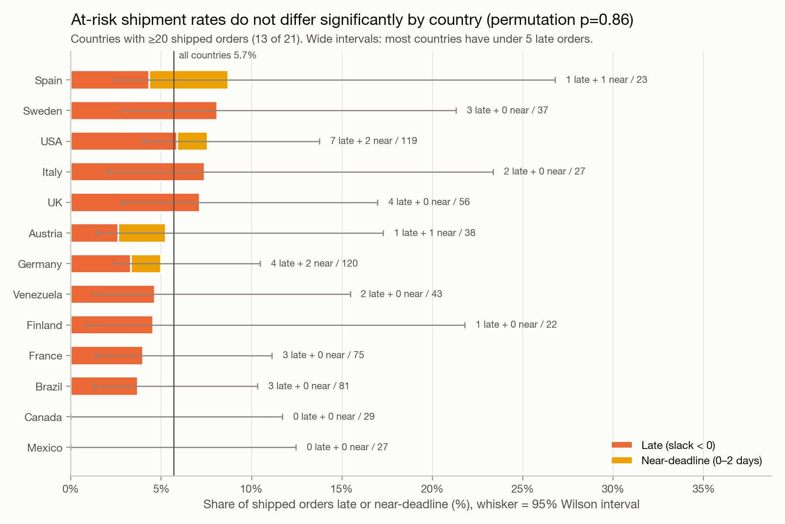
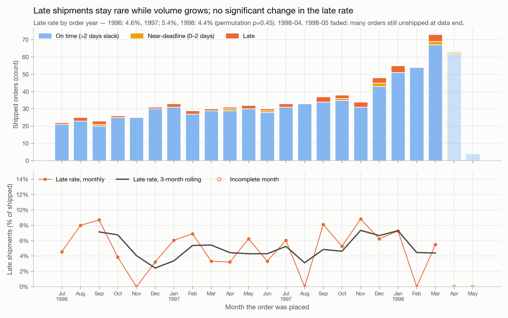
Main finding
- Only 37 of 809 orders (4.6%) were late, plus 9 near-deadline.
- Lead time is the only factor that holds up: orders due in 14 days are late 17.6% of the time vs 3.4% for 28 or 42 days (Fisher p = 1.6e-5, odds ratio 6.1).
- Shipper, country, employee, month, season and order size show no significant difference.
- Late orders are very slow orders (median 30 days to process vs 7 for the rest), not slightly slow ones.
Business interpretation
Switching shippers or targeting countries would not help. The practical fix is to flag 14-day-deadline orders at entry and fast-track them, and to watch for orders stuck in processing beyond about 14 days. With only 37 late orders, differences that do not pass the threshold are reported as counts, not findings.
Q4Do discounts increase sales?
Question
Do discounted order lines sell more units and more revenue than undiscounted ones, and does this vary by discount level and category?
Why it matters
Discounts give away margin. They are only worth it if they lift volume enough to offset the lower price.
Analytical approach
2,147 order lines at the six standard discount levels (8 stray lines from one order were excluded). Revenue is used because the data has no cost. We compare raw averages, then compare the same product and same customer using fixed-effects regressions, so that customers who buy in bulk anyway do not distort the result.
Visualization
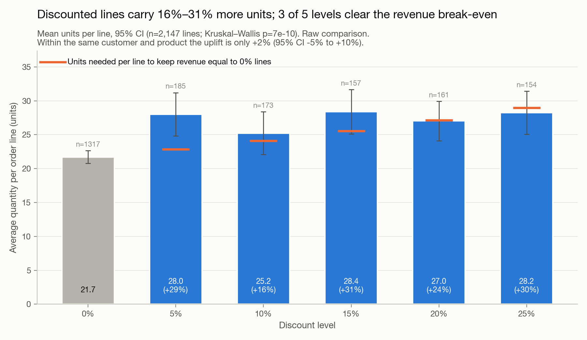
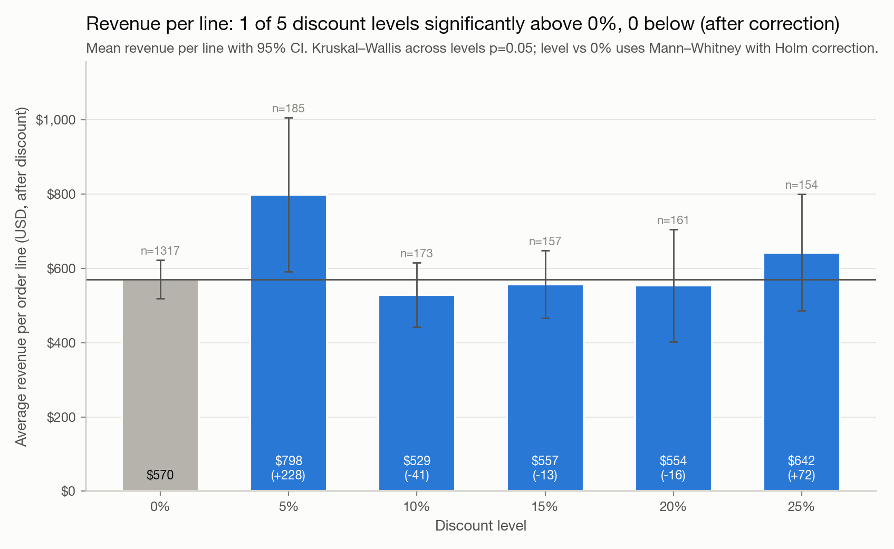
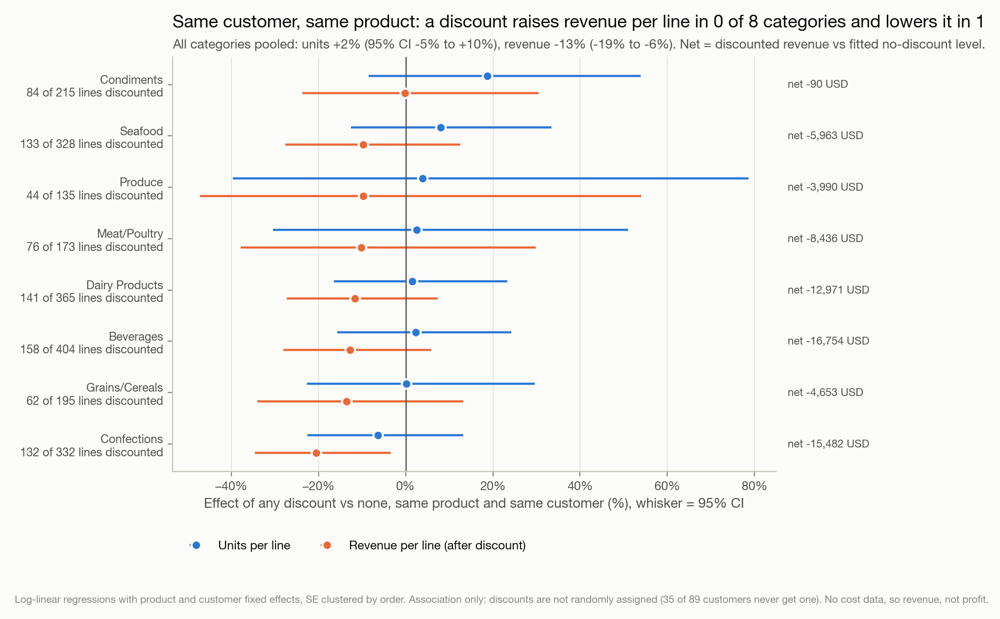
Main finding
- At face value, discounted lines carry +26% units (p < 1e-10), but revenue per line is only +9% and not robust.
- Same customer, same product: the unit lift shrinks to +2% (95% CI −5% to +10%, not significant), and revenue per line is −13% (CI −19% to −6%), roughly the discount itself.
- 5% discounts look revenue-neutral; 10%, 20% and 25% significantly reduce revenue per line. Confections is the only category with a significant drop.
Business interpretation
The apparent volume gain comes from who gets discounts (large, frequent buyers; 35 of 89 customers never receive one), not from the discount itself. Discounts mostly give away revenue. Recommendation: stop broad discounting, keep small (5%) discounts if needed, and test deeper discounts only with a controlled experiment. Limits: revenue, not profit; association, not causation (discounts may be granted because an order is large).
Data and limitations
- Revenue = UnitPrice × Quantity × (1 − Discount) from Order Details; total $1,265,793.04, 830 orders, 2,155 lines, reconciled four ways.
- Revenue, not profit: the data has no cost information.
- Results are associations, not causal effects.
- 1998 Q2 is partial (88 orders), left out of growth comparisons; 21 unshipped orders left out of lateness analysis; 8 stray-discount lines (order 11077) left out of Q4.
- Sales roughly doubled in 1998, so most countries show strong growth; growth is judged relative to the company's +83%.
- Small samples (e.g. 37 late orders; countries with 1–2 customers) limit what can be concluded and are flagged.
All figures and tables are regenerated from the raw workbook by python src/run_all.py.